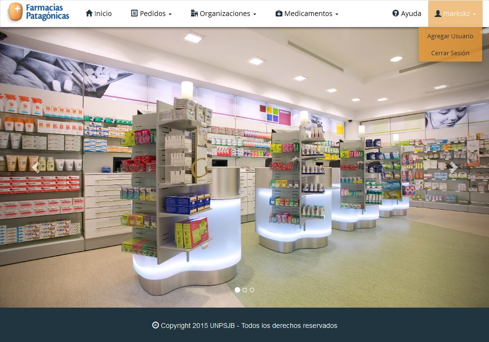
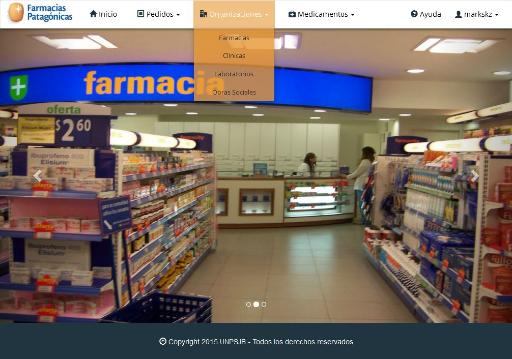
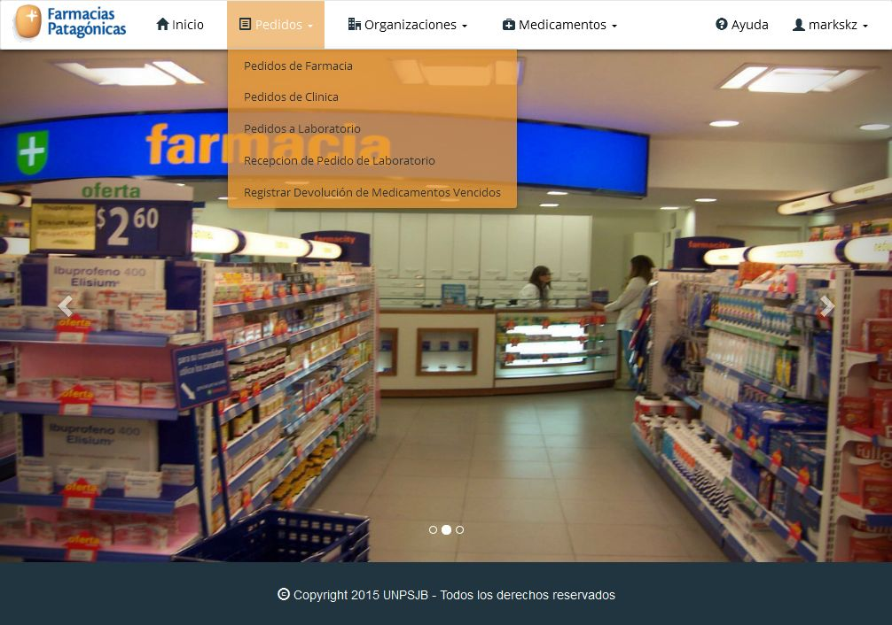

Pantalla Principal¶
La pantalla principal del sistema ofrece un menú de navegación en el que se encuentran las gestiones generales del sistema.

Estas gestiones son:
Gestión de Usuarios¶
La Gestión de Usuarios muestra la información relacionada al usuario activo y funcionalidades que esten acordes a los permisos que posea el mismo.
- Estas funcionalidades son:
- Entrar al Sistema
- Agregar Usuario
- Cerrar Sesión
Gestión de Medicamentos¶
La Gestión de Medicamentos muestra las funcionalidades relacionadas a los medicamentos que manejará el sistema.

- Estas funcionalidades estan divididas en estas cuatro secciones:
- Medicamentos
- Monodrogas
- Nombres Fantasía
- Presentaciones
Gestión de Organizaciones¶
La Gestión de Organizaciones muestra las funcionalidades relacionadas a las organizaciones que manejará el sistema.
- Estas funcionalidades estan divididas en estas cuatro secciones:
- Farmacias
- Clínicas
- Laboratorios
- Obras Sociales
Gestión de Pedidos¶
La Gestión de Pedidos muestra las funcionalidades relacionadas a los pedidos que manejará el sistema.
- Estas funcionalidades estan divididas en estas cinco secciones:
- Pedido de Farmacia
- Pedido de Clínica
- Pedido a Laboratorio
- Recepción Pedido a Laboratorio
- Devolución de Medicamentos Vencidos